LUMA, FourthRev’s AI learning assistant, across ten programmes delivered with four university partners: Cambridge, LSE, King’s College London, and Monash.
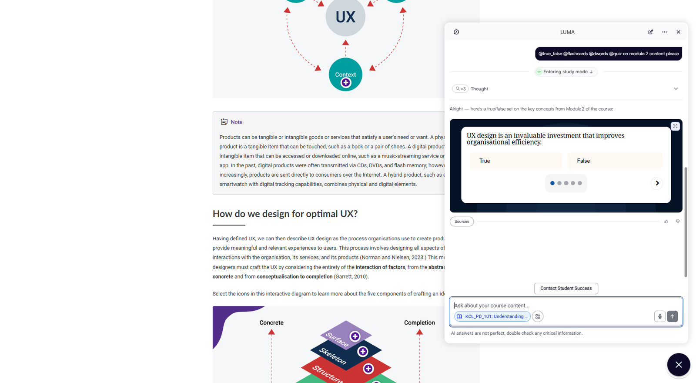
Inside a King's College London course. Quiz built from the module the learner is reading.
Quizzes, flashcards and feedback from the course content, with sources cited.
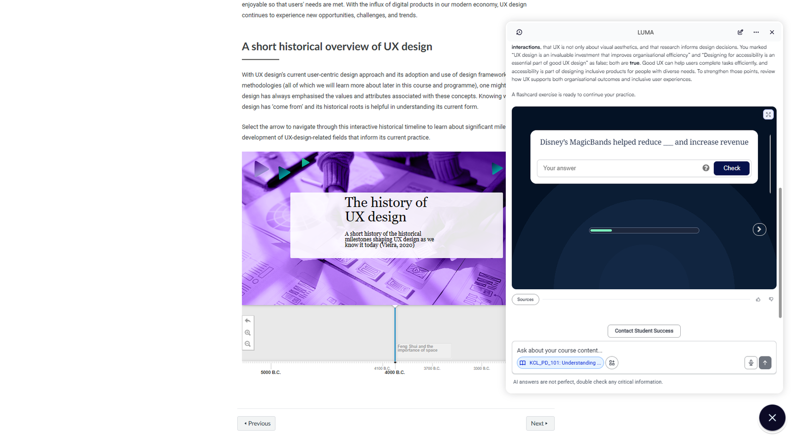
Marks the quiz, then keeps going. Fill-the-blank practice follows the true/false set.
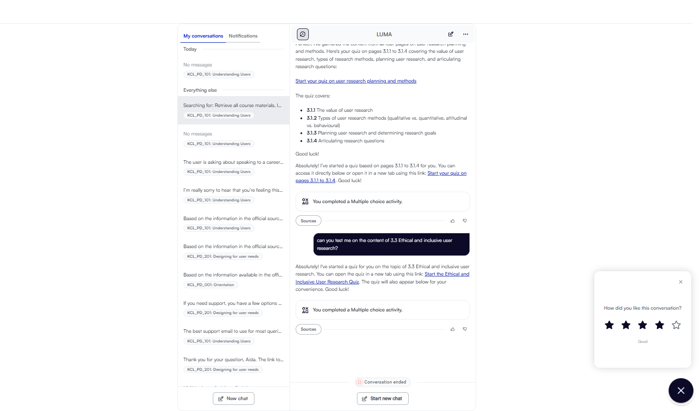
History across courses. Learners return to earlier chats and quizzes.
Help desks agreed with Student Success per programme. Personal, sensitive and policy questions become a ticket.
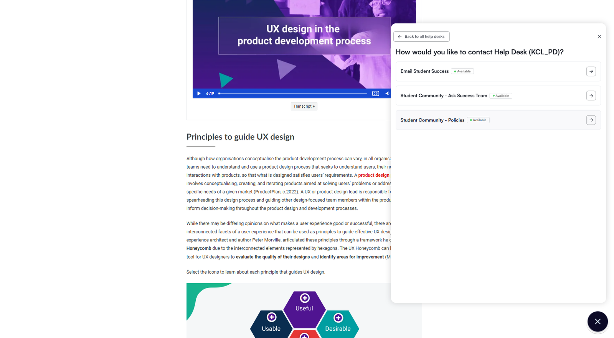
Help-desk menu.
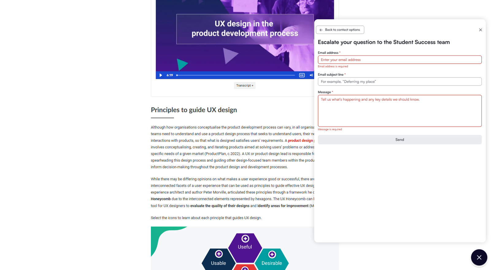
Escalation form.
Review rules run as workflows: length check first, then structure, evidence and target role.
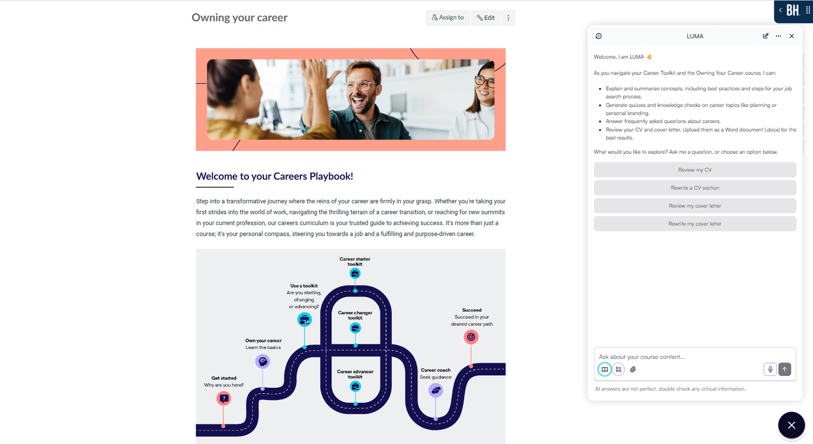
Career Playbooks assistant. Preset actions on the welcome screen.
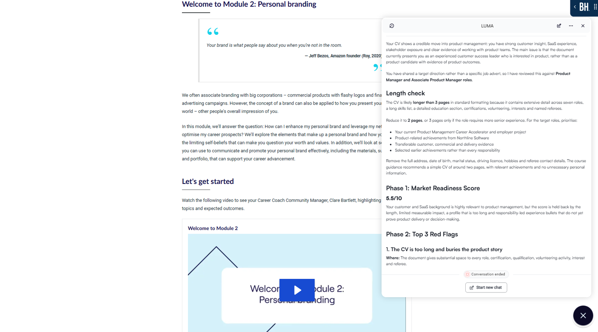
A review. Length, readiness score, top issues.
Forms for knowledge updates, data access and new assistants. Tickets for the rest.
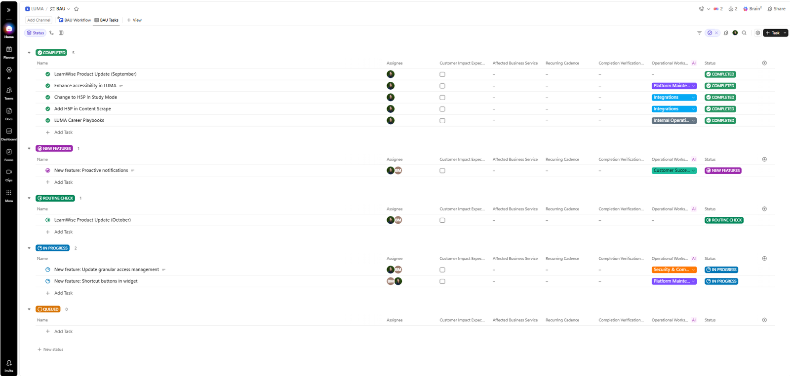
Every piece of LUMA work, grouped by status. Feature reviews, integrations, the monthly vendor check.
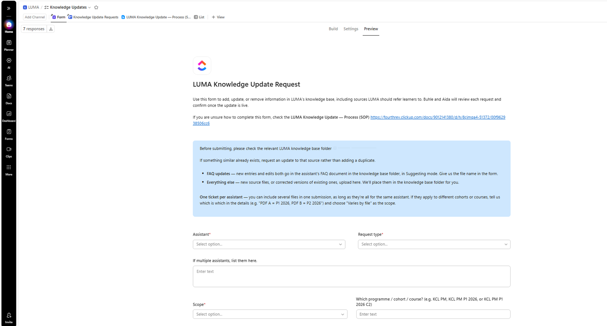
The form. One ticket per assistant.
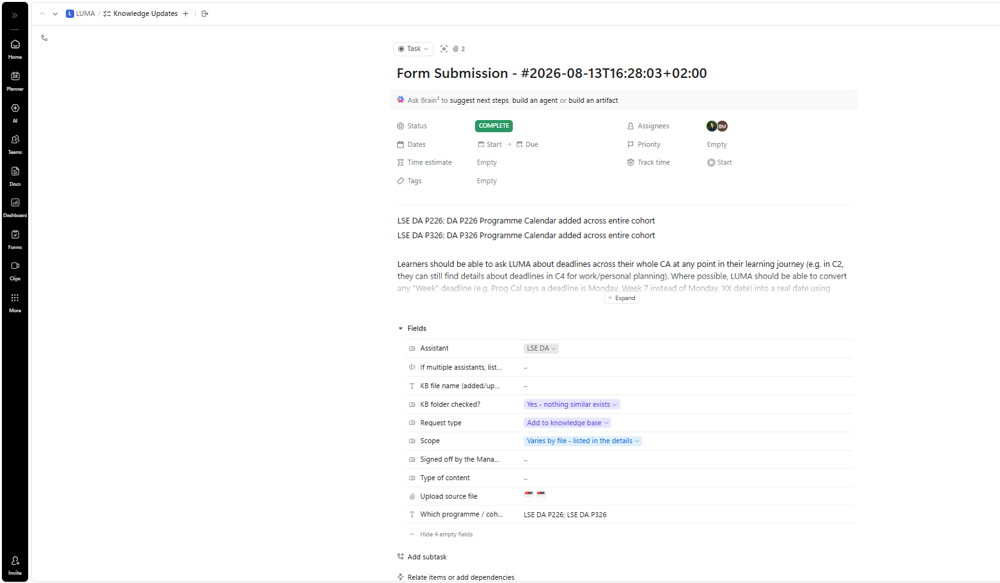
A completed update.
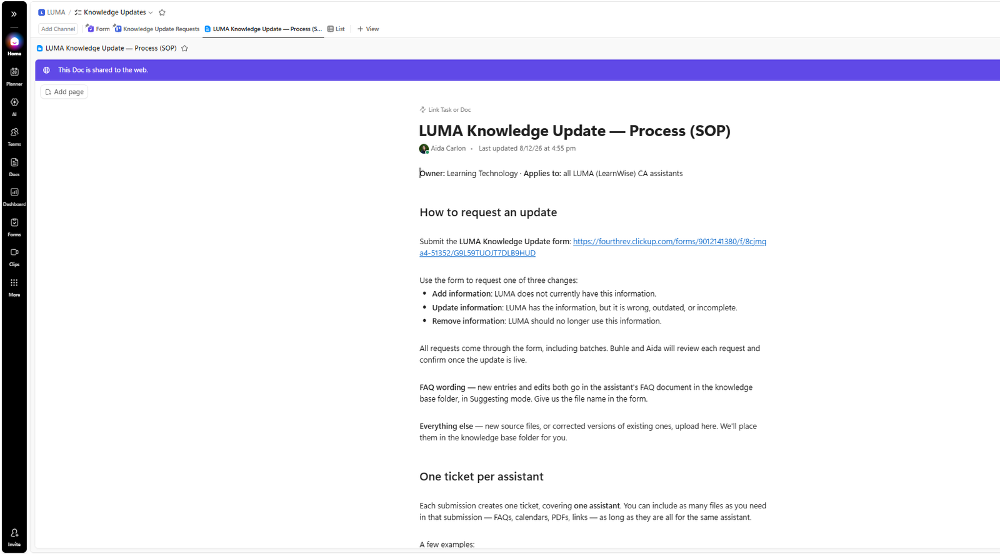
The SOP.
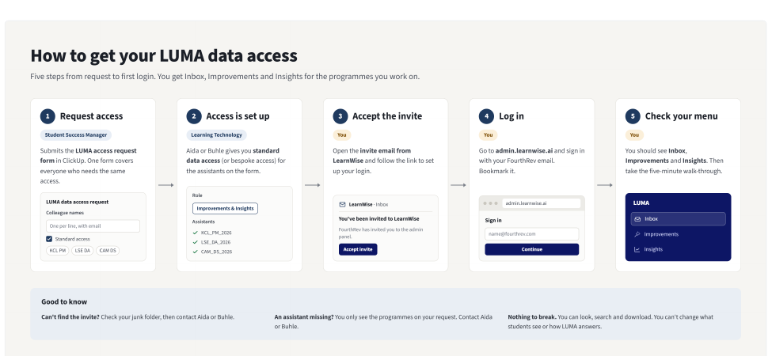
Live data for Delivery and Student Success. Request form, staff guide, five-minute walkthrough. No training session needed.
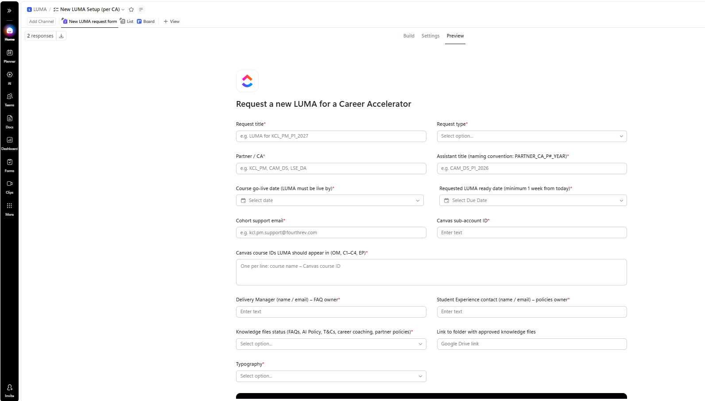
Requesting an assistant for a new programme. Everything a build needs in one submission.
King's College London, 24 August to 29 September 2026.
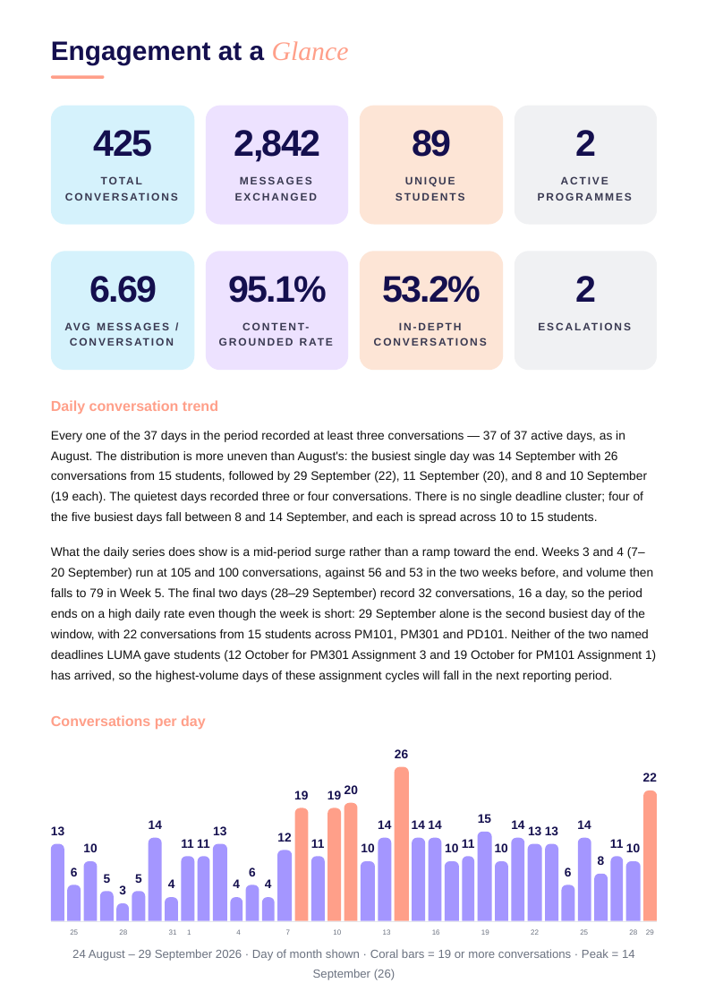
Engagement at a glance.
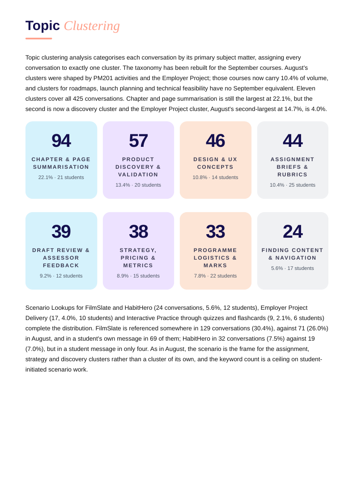
Topic clustering. What learners ask about, and which page needs a worked example.